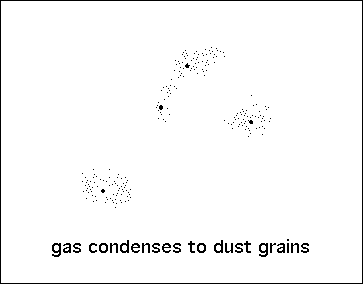

| Here is a cartoon of the standard model. |
|  |
| some of the remaining gas condenses into dust, |
| dust forms grains of sand, and |
| grains of sand form rocks. |
| The rocks collide and stick together to form larger rocks. |
| Eventually some heaps of rocks get massive enough to gravitationally attract other stuff, |
| and these growing rock piles form planets. |
Return to Fractal Planets, Real.